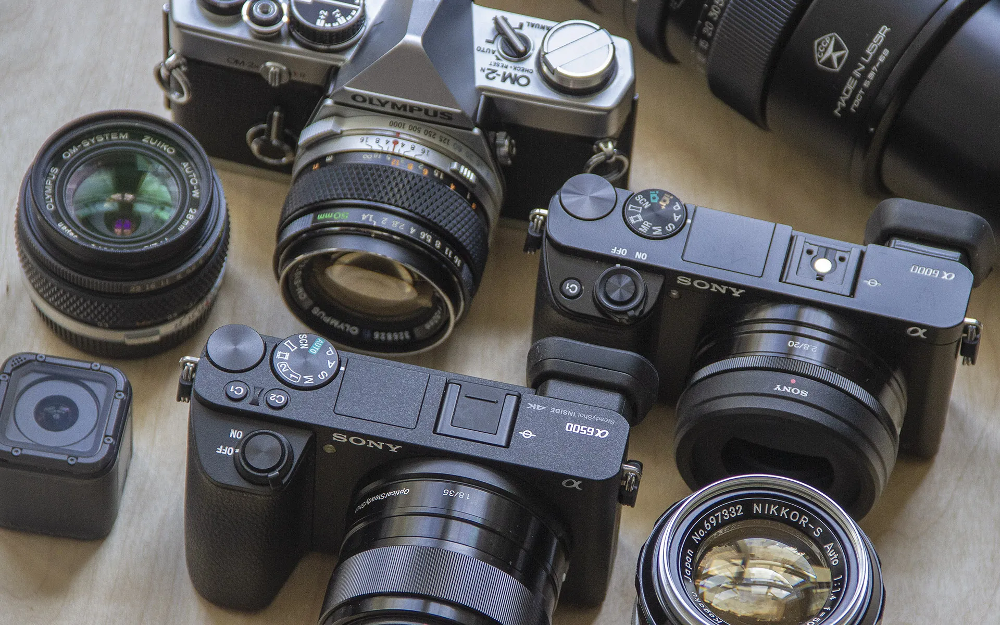
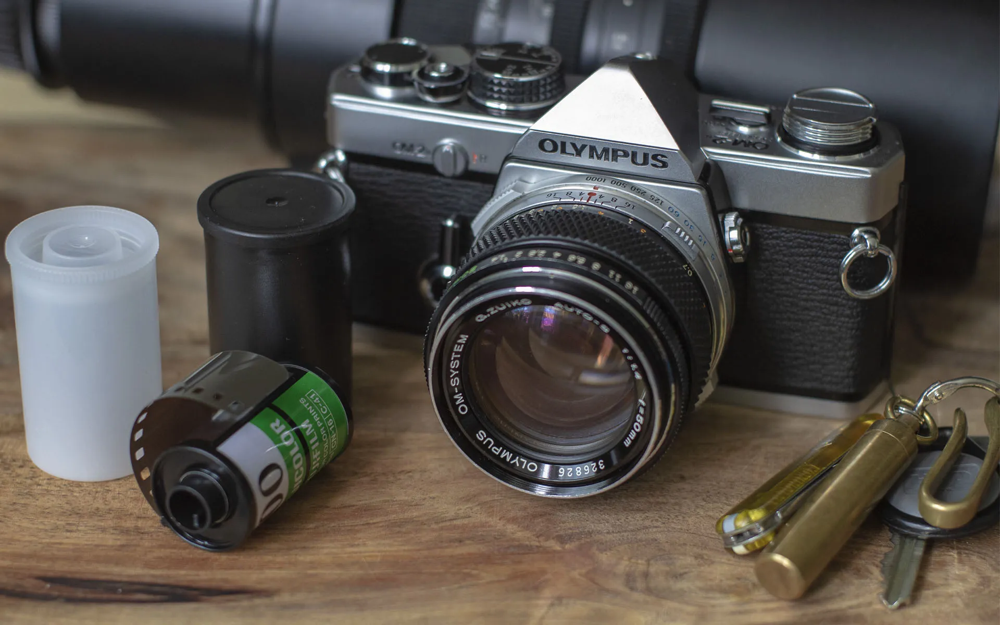
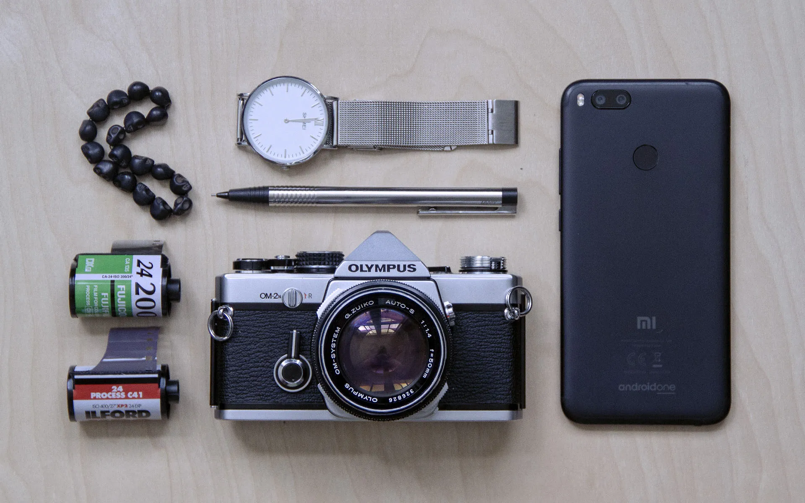

Photography
I love photography. I bring my camera almost everywhere I go.
Camera Kit

Digital
There is no point in a camera that you don't have with you. And while phones can sometimes be "good enough", the image and optics quality just isn't there. I prefer to bring a mirrorless that I could easily carry in my hand on a multi-hour hike, over a heavy DSLR that stays in a backpack or at home.
I don't own a zoom lens and prefer to shoot exclusively using prime lenses. It offers portability and significant weight and lens complexity reduction, making them more durable. The limitation of being unable to just zoom into the subject gives me an opportunity to position myself instead and work with what I have.
- Sony a6500
- Sony SEL20F28 20mm f2.8
- Sony SEL35F18 35mm f1.8 OSS
Film

"They don't make them like they're used to". And this one is one of the most beautiful cameras ever made. Often comes bundled with a Zuiko 50mm f2.8, but get the f1.4 if you can find one.
- Olympus OM-2n
- Zuiko 50mm f1.4
- Zuiko 28mm f2.8
